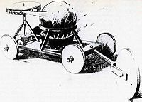
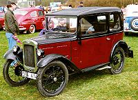
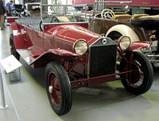
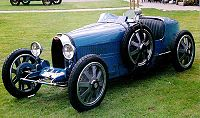
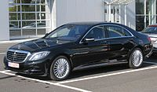
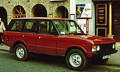
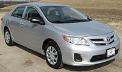

{kind=link}
Хронологія історії автомобілів
Першопроходці
Прообразом першого автомобіля стала самохідна іграшка для китайського імператора, створена членом єзуїтської громади в Китаї Фердинандом Вербістом близько 1672 року.
Німецький інженер Карл Бенц, винахідник безлічі автомобільних технологій, вважається винахідником сучасного автомобіля. Чотиритактний бензиновий (газоліновий) двигун внутрішнього згоряння, який представляє найпоширенішу форму сучасного самохідного руху — розробка німецького винахідника Ніколауса Отто. Подібний чотиритактний дизельний двигун був також винайдений німцем Рудольфом Дизелем. Також однією з технологій є водневий паливний елемент, як заміна для газоліну, був винайдений німцем Крістіан Фрідріх Шенбейн у 1838 році. Автомобіль на електричній батареї зобов'язаний своєю появою одному з винахідників електродвигуна угорцю Єдлик Аньошу та створений у 1858 році свинцево-кислотному акумулятору Гастона Планте.
Першим українським автомобілем став автобус, створений у механічній майстерні інженера В. Н. Стасюлевича у 1909 році.
Перші автомобілі
Парові автомобілі
Вважають, що перші парові самохідні машини розроблені ще в кінці XVIII століття. У 1770 і 1771 році Ніколя-Жозеф Кюньо продемонстрував свій експериментальний тягач для гармат на паровій тязі
Перший патент на автомобіль у Сполучених Штатах було видано Оліверу Евансу в 1789 році. Еванс продемонстрував свою першу успішну самохідну машину, яка була не тільки першим автомобілем у США, але також і першою машиною-амфібією (оскільки була здатна пересуватися на колесах по землі і за допомогою лопатей на воді).
У 1815 році професором Празької політехнічної школи Юзефом Божеком була зібрана парова машина на рідкому паливі, а в 1813 році Волтером Хенкок чотиримісний паровий фаетонУ 1867 році канадець Генрі Сет Тейлор на ярмарку в Станстед продемонстрував свій паровий багі. У 1873 році французький винахідник Амадей Болле зібрав чотириколісний пасажирський автомобіль.
Вінтажна епоха
Епоха вінтажних автомобілів тривала з кінця Першої світової війни (1919) і до краху Уолл-стріт (1929). Протягом цього періоду переважали автомобілі з переднім розташуванням двигуна, закритим кузовом і стандартизованим управлінням. У 1919 році 90 % автомобілів випускалися з відкритим кузовом; до 1929 р. 90 — із закритим.
Тривав і розвиток двигунів внутрішнього згоряння: на вершині лінійки були багатоклапанні двигуни з верхнім розподільним валом, а для надбагатих покупців були розроблені V-подібні восьми-, дванадцяти- і навіть шістнадцятициліндрові двигуни. У цьому ж році Мальком Лоухед (співзасновник Lockheed) винайшов гідравлічні гальма, які були застосовані Duesenberg на їх Model А у 1921 році.
Через три роки Германн Рейслер із «Vulcan Motor» винайшов першу автоматичну трансмісію з двоступеневою планетарною коробкою передач, гідротрансформатором і блокувальною муфтою. Ця трансмісія ніколи не виходила у виробництво (подібна до неї стане доступною лише у 1940 році).
Приклади автомобілів цього періоду:
-

Austin Seven Saloon (1931)
-

Lancia Lambda (1923)
-

Bugatti Typ 35A (1925)
Довоєнна епоха
Довоєнна частина класичної епохи почалася з Великої депресії (1930) і закінчилася з відновленням від наслідків Другої світової війни (зазвичай вважають завершився в 1948). Саме в цей період у продажах домінують інтегровані крила і повністю закриті кузови, а нові типи кузовів седан мали в задній частині інтегрований багажник для вантажів. Старі малолітражки[en], фаетони[en] та турингові автомобілі з відкритим верхом були витіснені до кінця епохи.
До 1930-го року було винайдено більшість з технологій, використовуваних у сьогоднішніх автомобілях, хоча деякі речі були «перевинайдені» і приписані комусь іще. Наприклад, передній привод був перевідкритий Андре Сітроен і представлений у Traction Avant у 1934 році, хоча він з'явився кілька років доти, в дорожніх автомобілях, зроблених Alvis і Cord, і в автомобілях для гонок Miller (можливо, з'явився ще в 1897 році).
Аналогічно, незалежна підвіска спочатку була винайдена Амеде Болле[en] в 1873 році, але не потрапила в серійне виробництво до появи малооб'ємного Mercedes-Benz 380 в 1933 році, що змусило популяризувати її на американському ринку. У результаті консолідації і дорослішання автомобільної промисловості до 1930 року кількість виробників автомобілів різко скоротилося, частково завдяки впливу Великої депресії.
Приклади автомобілів цього періоду:
{kind=link}
{kind=link}
{kind=link}
Післявоєнна епоха
Після Другої світової війни автомобільний дизайн пережив революційні зміни в типі кузовів понтон (без виступаючих крил та їх рудиментів, підніжок і фар), а першими представниками були радянський ГАЗ-М20 «Побєда» (1946), британський Standard Vanguard (1947), американські Studebaker Champion та Kaiser (1946), чеська Tatra 600 (1946) та італійська Cisitalia 220 (1947).
Автомобілебудування остаточно оговталося від наслідків війни в 1949 році, коли в США були показані висококомпресійний двигун V8 і нові кузови від марок General Motors, Oldsmobile та Cadillac. У Великій Британії на автомобільний ринок вийшли такі автомобілі як Morris Minor (1948) і Rover P4 (1949), Ford Consul (1959). В Італії Енцо Феррарі почав випуск серії 250, а Lancia випустив революційну модель Lancia Aurelia з двигуном V6.
Сучасна епоха
Зазвичай сучасну епоху визначають як 25 попередніх, від сьогоднішнього, років. Проте, є деякі технічні і конструктивні аспекти, які відрізняють сучасні автомобілі від антикваріату. У сучасній ері швидко зростала стандартизація автомобілів, використання спільної платформи та система автоматизованого проектування. Тому за останні роки з'являються нові впровадження технологій, відбувається популяризація та розвиток винайдених, або ж перевинайдення чи повернення до старих технологій.
До найважливіх тенденцій світового автомобілебудування на початку XXI століття можна віднести особливу увагу до поліпшення екологічних та економічних показників ДВС (каталітичні нейтралізатори і дизелі нового покоління, нові типи палив, включаючи біопаливо), створення гібридних систем (ДВС + електромотор + акумулятор), підвищенню рівня безпеки, поліпшення ходових якостей (повний привід, електронні системи допомоги водінню), «інтелектуалізації» автомобіля в цілому.
-

Mercedes-Benz S Class W222 (2013)
-

Range Rover 4 (1981)
-

oyota Corolla (2011)